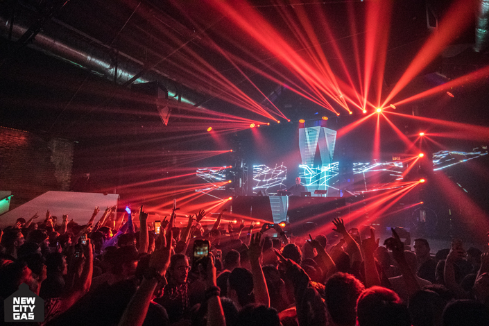
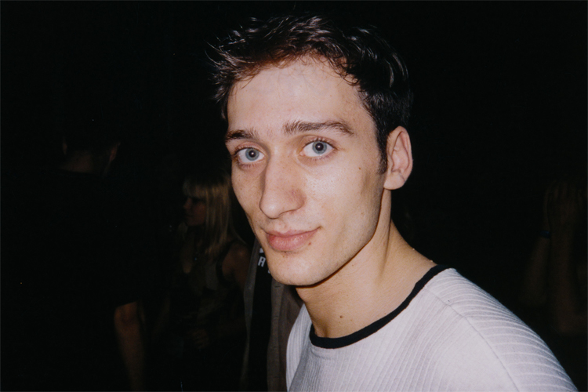

The Night I Fell in Love With Dance Music: Paul van Dyk
{kind=link}

Trance veteran Paul van Dyk is currently underway on a special Dreamstate tour of the US, rolling out prior to an appearance at the San Francisco edition at the end of the month. He is one of the mainstay names on the international DJ circuit, but he’s also been there since the very beginning—even before he was legally able to listen to or participate in dance culture.
Growing up in the Communist German Democratic Republic (GDR), in East Berlin, Paul’s first exposure to early dance music was in the late ‘80s, via West Berlin radio. When the Berlin Wall finally came down in 1989, he crossed over to become part of the city’s renowned early rave scene. It’s a tale that needs to be told, so we tracked Paul down several dates into the Dreamstate tour. Here’s the story in his own words:
My very first actual experience with electronic dance music wasn’t quite as exciting as going to a show. It was actually pretty much sitting in my room in East Berlin, on the wrong side of the wall, listening illegally to West Berlin radio. There was a broadcast from a radio presenter, and she was playing a totally new kind of exciting music. And I have to say, I quickly fell in love with it. There was something about this music that sort of was just so… new.
“As soon as the Wall went down, this whole energy from the East German kids exploded into West Berlin. This really created a momentum.”
However, the night that I really fell in love with dance culture and clubbing came a little later, when the Berlin Wall fell and I finally had the chance to go to all the clubs that I had heard of before, while listening illegally on the radio. I arrived to become part of a new cultural movement that had already been growing in West Berlin before reunification; I think there were many reasons for this. The bigger creative picture of what was going on around the world—and definitely not only in Berlin—I think we were all just fed up with the plastic pop at the end of the ‘80s, which was so marketing-driven. A whole musical subculture was created that eventually became techno, trance, house, and all the rest. And that was a global movement. You also have to understand that I wasn’t the only one in East Berlin listening illegally to West Berlin radio stations; there was a huge scene, a huge group of people that loved this music but could never come to a show because of the Berlin Wall standing in the middle of it. So as soon as the Wall went down, this whole energy from the East German kids exploded into West Berlin. This really created a momentum.
{kind=link}

At the same time, a lot of companies from East Berlin and East Germany went bankrupt after the reunion of the country, so there were a lot of big spaces available and nobody really responsible for them. There were a lot of halfway illegal clubs that sprung up in old East Berlin government buildings. Just a PA, a few turntables and a case of beer, and that was the club. Tresor, for instance, was in the basement of an old building in the so-called No Man’s Land, the place nobody could go because it was the buffer zone between East and West Berlin, with minefields and armed guards. It was a form of structural anarchism, and it led to all these free-spirited feelings being able to explode in such a positive way.
"That first night at UFO, I finally saw people that dressed like me, who were actually like me, who listened to the same music as me, and also just had the same free spirit as me. "
However, the first club that I went to wasn’t actually in a deserted warehouse; rather, it was one of the legendary clubs that was already going before the Wall went down. It was called UFO and it was the club for underground dance culture back in the day. Back then, the music was not called trance or techno; it was all just “house” music. Even if there was some banging stuff from Detroit, or some vocal stuff from Chicago, it was all just “house.” Obviously, later it all became a bit more diverse, but that was the only [term] we had back then.
What really grabbed me that first night at UFO was the free spirit of this music. There weren’t any particular vocals or anything like that; it was just pure instrumentation, just the music itself and how it was arranged. You could feel that somebody had actually put a lot of emphasis into every single little detail of the piece that you were hearing. Everybody was trying to do something new and different, in a very passionate and artistic way, and this is what caught my attention and made me fall in love with this music.
That first night at UFO, I felt a new kind of belonging. In East Berlin, I always felt like I was the weirdo. And I am a weirdo—don’t get me wrong [laughs]—but I felt like a misfit. I wasn’t part of any of the youth organizations, and I was listening to music that none of my friends or people from my school would have even heard of. That first night at UFO, I finally saw people that dressed like me, who were actually like me, who listened to the same music as me, and also just had the same free spirit as me. So I felt like, “This is my group; this is my posse.” This night was the start of something big for me.
Follow Paul van Dyk on Facebook | Twitter | Instagram